KIDIPOO
Designing a playful and expressive e-commerce experience for a children’s fashion brand.
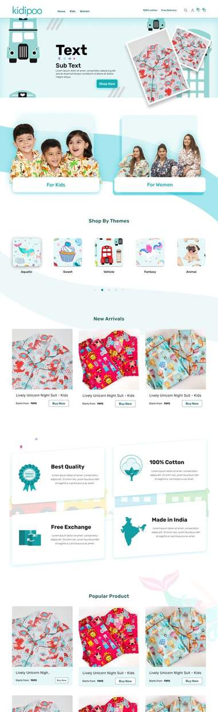
Kidipoo is an e-commerce platform for children’s and family fashion, designed around playful visual storytelling, category-led shopping and expressive product presentation. I designed the experience end-to-end, with guidance from senior design mentors along the way. The client’s development team then built and launched it — Kidipoo is live today.
The opportunity
The brief was to design an e-commerce experience that felt playful and imaginative for children, while remaining clear, navigable and easy to shop for the parents actually making the purchase — two very different audiences sharing one storefront.
- Help users discover products in a more engaging and intuitive way
- Create a clear, simple way to explore kids’ and women’s collections
- Bring a sense of play and imagination to the shopping experience
- Design for the unique needs of children and the parents who shop for them
- Develop a distinctive visual language that feels warm, friendly and expressive
Designing for two worlds
The visual experience needed to feel playful and imaginative for children, while still supporting the clear navigation and confident decision-making parents rely on.
Starting with rough ideas
Early sketches were used to quickly explore hierarchy, composition and different approaches to presenting products and categories, before any structure was locked in.
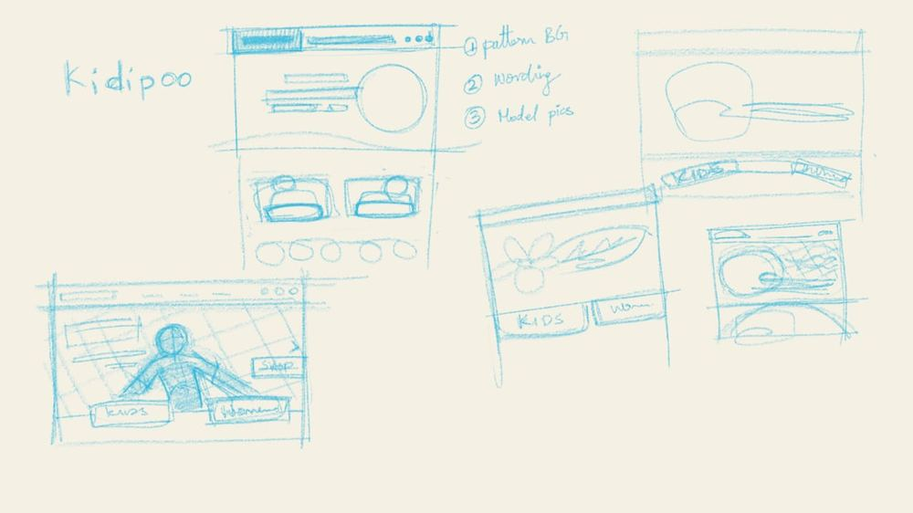
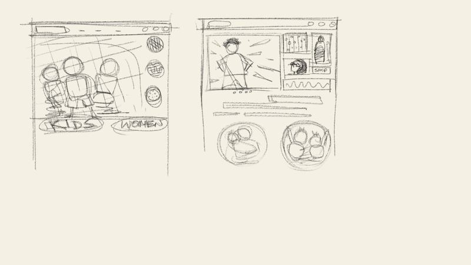
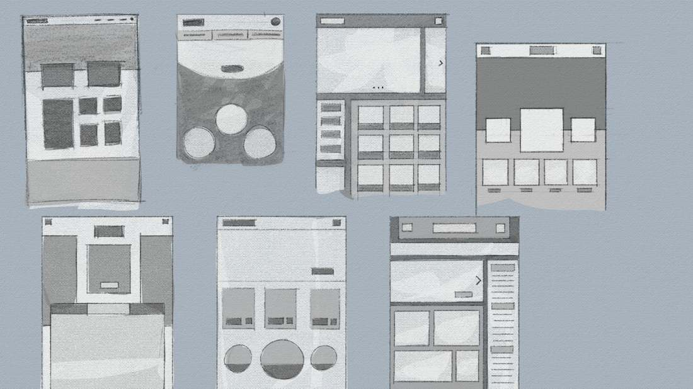
Sketch → wireframe → refined
Wireframing translated the early visual ideas into clearer structure, and iterated on how content could be organised across the homepage.
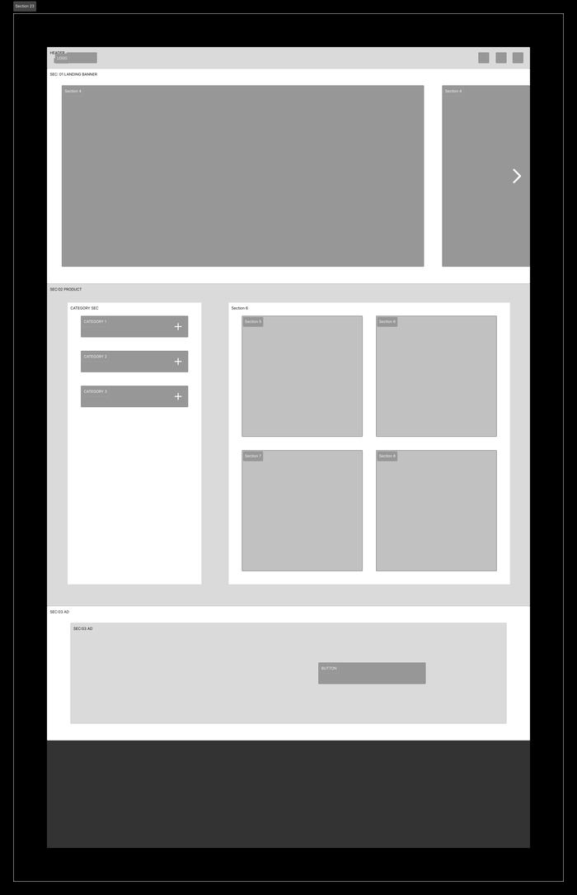
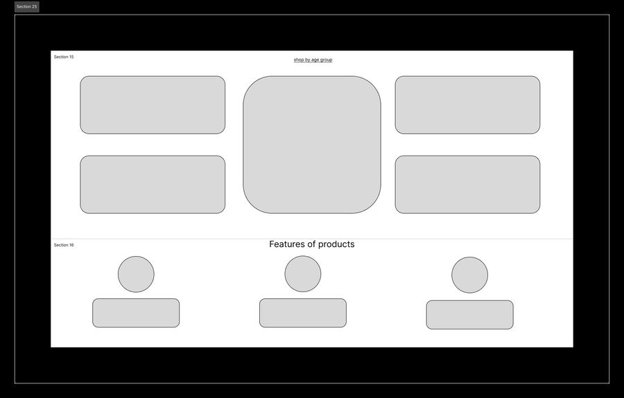
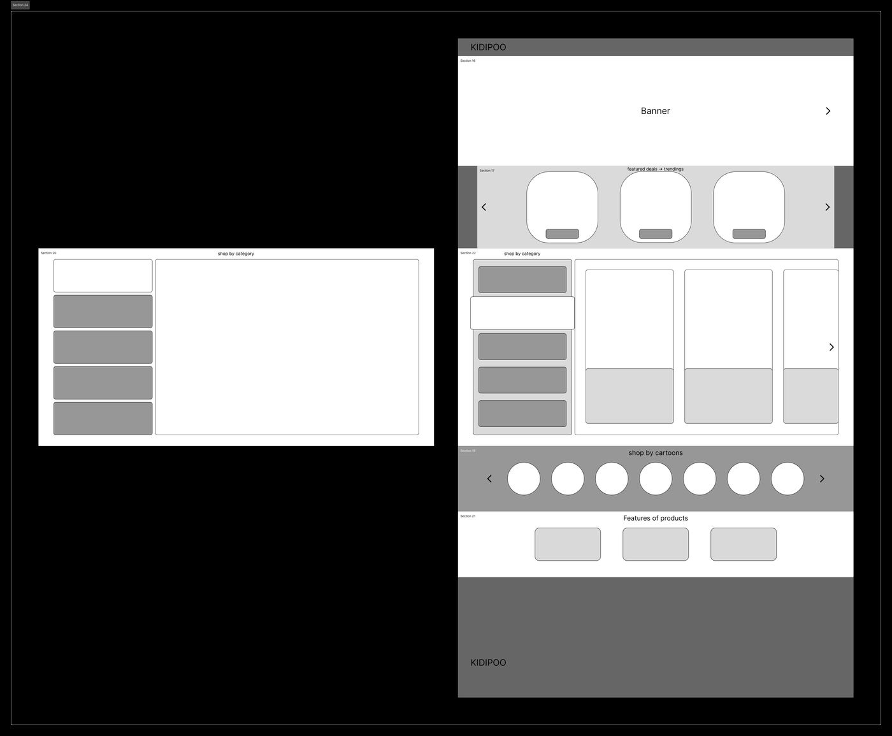
Mapping the experience architecture
Before moving into interface design, I mapped the relationships between user actions, exchange stages, payment details and status updates — login, profile, exchange and return, pickup, address management, payment method and order status, plus the admin side of the same system — with guidance from senior mentors along the way.
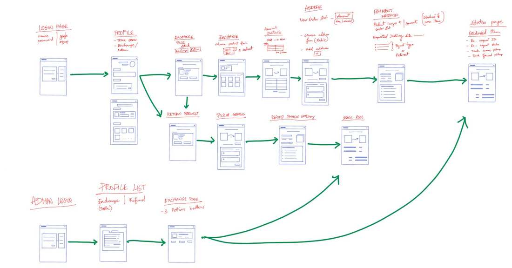
Out of that full system, I defined one primary journey — the shortest, clearest path a customer takes from entering the platform to a completed exchange:
- 1Login
- 2Profile
- 3Exchange
- 4Select Product
- 5Enter Amount
- 6Add Address
- 7Payment
- 8Status
And a parallel admin workflow, refined with input from developer mentors on feasibility — login, profile list, exchange management, process/update, and user status update.
From structure to personality
Once the layouts were explored, focus shifted to developing a visual language that could feel playful without compromising clarity.

Building a playful visual world
Illustration became a key part of the visual exploration, helping the interface move beyond a conventional product catalogue and toward a more expressive children’s experience — built as a modular system of characters, animals, scenes and stickers.
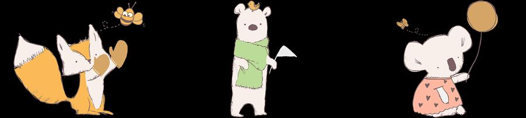
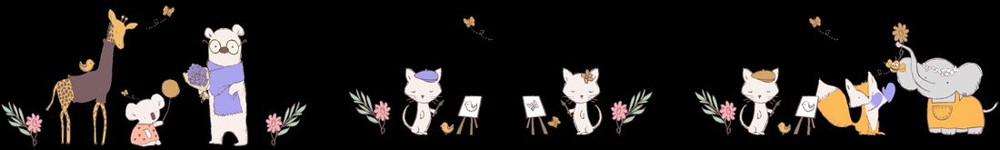
“Could the category experience feel less like a conventional storefront and more like an entry point into Kidipoo’s world?”
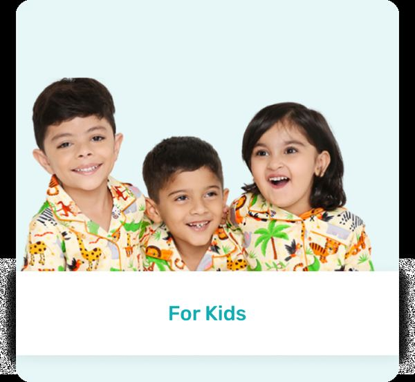
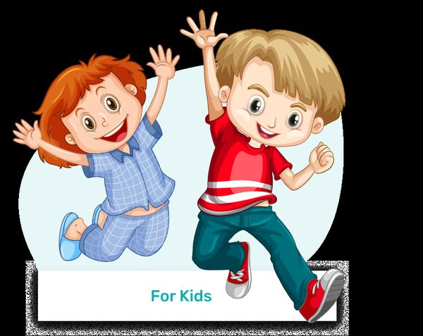
Bringing it together
The final direction brought together the explored layout, product hierarchy and playful visual system into a single e-commerce experience.
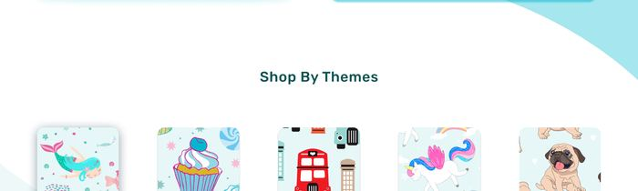
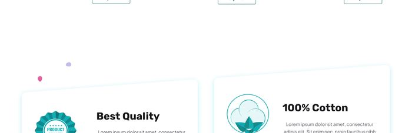
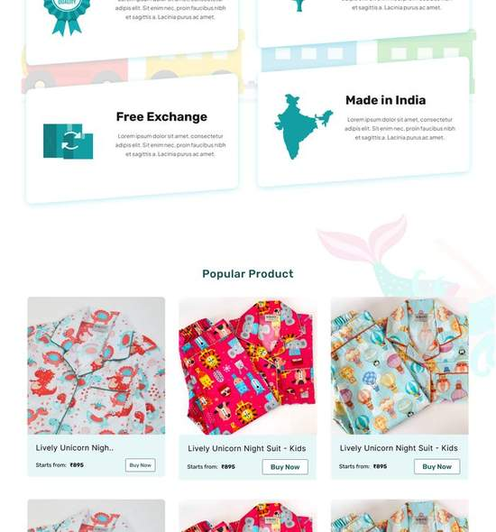
Small moments that build the experience
Thoughtful details — buttons, product cards, illustrations and icons — help create a cohesive and delightful experience across the interface.
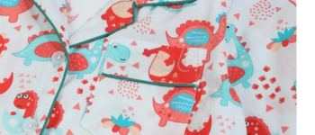
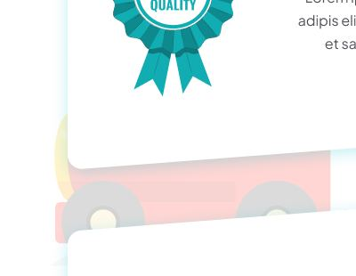
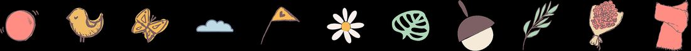
From design to live product
The experience was designed by me, with guidance from senior design and development mentors, and handed over for development. The client’s development team implemented and launched the website. Kidipoo is now live at kidipoo.com.
The project demonstrates the full progression from early exploration through interface planning, UX architecture, wireframing and visual development to a live, shipped product.
What I learned
- Mapping structure before interface saves time — understanding the full system before designing screens reduced rework later
- Exploration creates better visual decisions — testing multiple layouts avoided committing too early to a single direction
- Visual personality needs a functional role — illustration worked best when it supported hierarchy and discovery, not just decoration
- User and admin workflows need to be considered together — designing the operational side alongside the customer journey led to a more complete system